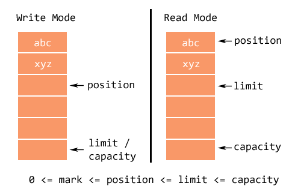

El mecanismo de acceso a un fichero está basado en un puntero y en una zona de memoria que se suele llamar buffer. El puntero siempre apunta a un lugar del fichero, o bien a una posición especial de fin de fichero que, a veces, se denomina EOF (del inglés End Of File). Esta se puede entender que está situada inmediatamente a continuación del último byte del fichero.
Todas las clases para operar con ficheros disponen de las siguientes operaciones básicas:
- Apertura. Antes de hacer nada con un fichero, hay que abrirlo. Esto se hace al crear una instancia de una clase que se utilizará para operar en él.
- Lectura. Mediante el método read(). Consiste en leer contenidos del fichero para volcarlos a memoria y poder trabajar con ellos. El puntero se sitúa justo después del último carácter leído.
- Salto. Mediante el método skip(). Consiste en hacer avanzar el puntero un número determinado de bytes o caracteres hacia adelante.
- Escritura. Mediante el método write(). Consiste en escribir contenidos de memoria en un lugar determinado del fichero. El puntero se sitúa justo después del último carácter escrito.
- Cierre. Mediante el método close(). Para terminar, hay que cerrar el fichero.
Si el acceso es secuencial, el puntero se puede situar en cualquier lugar del fichero. Si el acceso es secuencial, sólo se mueve el cursor tras realizar operaciones de lectura, escritura o salto. Lo veremos en el punto 5. Formas de acceso a un fichero.

Operaciones de lectura
Cuando se lee desde el fichero, hay que indicar el buffer que recibirá los datos que se lean. Si no se indica el número de bytes o de caracteres, se leeará hasta llenar el buffer (peligro de desbordamiento de búffer).
Si el puntero apunta a la posición EOF, no se leerá nada.
Operaciones de escritura
Cuando se escribe en el fichero, hay que indicar el buffer y el número de bytes para leer. Desde el buffer se transfieren los datos a la posición a la que apunta el puntero.
Si el puntero apunta al final del fichero, se añaden los datos al final de este.
No hay ningún método directo para insertar datos en medio de un fichero.